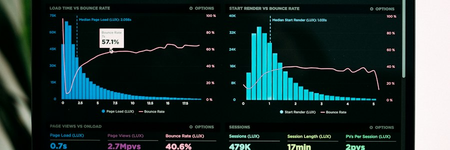

Defining Data Analytics

Data analytics is the process of examining raw data to find patterns, draw conclusions, and support decision-making. It combines statistics, computer science, and domain expertise to transform numbers into actionable insights.
Organizations across every industry — from healthcare and finance to sports and retail — rely on data analytics to understand their customers, optimize their operations, and plan for the future. As data becomes more abundant, the ability to interpret it has become one of the most valuable skills in the modern workforce.
The Four Types of Analytics
Data analytics is not a single technique — it exists on a spectrum from describing the past to prescribing future actions.
What happened?
Summarizes past data using reports, dashboards, and basic statistics to describe events that have already occurred. Example: monthly sales reports and performance summaries.
Why did it happen?
Examines data to identify the root cause of an outcome. This often involves drilling down into data, correlation analysis, and comparing segments. Example: identifying why sales dropped last quarter.
What might happen?
Uses statistical models and machine learning to forecast future outcomes based on historical patterns. Example: predicting which customers are likely to cancel their subscription.
What should we do?
Recommends specific actions based on the analysis to achieve a desired outcome. Example: an algorithm that suggests optimal product pricing to maximize revenue.
The Data Analysis Process
A structured five-step process guides every successful data analysis project, from framing the question to communicating the answer.
-
Define the Question
Clearly state the problem you are trying to solve or the question you want to answer. A well-defined question prevents wasted effort and keeps the analysis focused on what actually matters to stakeholders.
-
Collect the Data
Gather relevant data from databases, spreadsheets, surveys, web APIs, or other sources. Consider whether the data is complete, unbiased, and appropriate for your question before proceeding.
-
Clean the Data
Remove duplicates, correct errors, handle missing values, and ensure consistency in formats and categories. Data quality issues at this stage will distort every conclusion downstream.
-
Analyze the Data
Apply statistical methods, SQL queries, or models to find patterns and test hypotheses. This is where tools like SQL, Python, R, and visualization software are most heavily used.
-
Communicate the Findings
Present your insights clearly through charts, dashboards, or written reports. The best analysis is worthless if the audience cannot understand or act on the findings.
Why Learn Data Analytics?
Data literacy is rapidly becoming a core skill across almost every profession — not just technology and finance. Whether you want to change careers, enhance your current role, or simply understand the world through numbers, data analytics offers a practical and high-value skill set.
Ready to take the next step? Explore the tools used by professional analysts and follow a structured learning roadmap designed specifically for beginners.